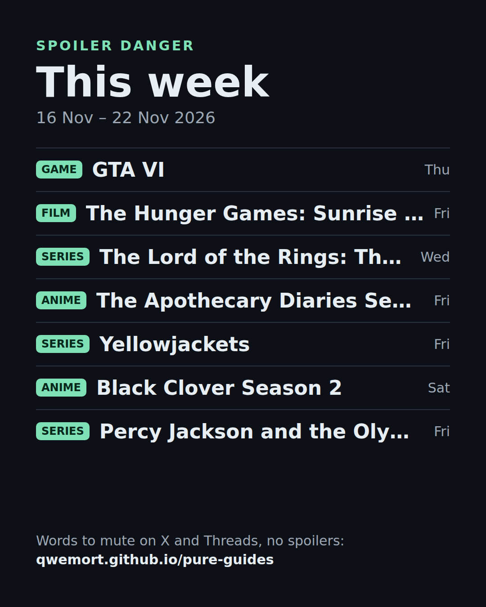

Not watching or playing on day one? These come out this week, so spoilers will be everywhere. Mute the words before people start posting. No spoilers on this page: no episode titles, no plot, only names and dates. Tap a word to copy it, or copy a whole group.

Get this in your calendar. Subscribe once and every release lands in your calendar with a link to what to mute. It updates itself every week. Google Calendar · Apple / Outlook · .ics file
The Hunger Games Sunrise on the Reaping spoiler|The Hunger Games Sunrise on the Reaping spoilers|The Hunger Games Sunrise on the Reaping ending|The Hunger Games Sunrise on the Reaping post credits|The Hunger Games Sunrise on the Reaping leak
The Lord of the Rings The Rings of Power spoiler|The Lord of the Rings The Rings of Power spoilers|The Lord of the Rings The Rings of Power finale|The Lord of the Rings The Rings of Power ending|The Lord of the Rings The Rings of Power leak
Percy Jackson and the Olympians spoiler|Percy Jackson and the Olympians spoilers|Percy Jackson and the Olympians finale|Percy Jackson and the Olympians ending|Percy Jackson and the Olympians leak
The Exiled Heavy Knight Knows How to Game the System spoiler|The Exiled Heavy Knight Knows How to Game the System spoilers|The Exiled Heavy Knight Knows How to Game the System finale|The Exiled Heavy Knight Knows How to Game the System ending|The Exiled Heavy Knight Knows How to Game the System leak
Reincarnated as a Sword spoiler|Reincarnated as a Sword spoilers|Reincarnated as a Sword finale|Reincarnated as a Sword ending|Reincarnated as a Sword leak
X: Settings and privacy, Privacy and safety, Mute and block, Muted words.
Threads: Settings, Privacy, Hidden words.
YouTube and Reddit have no mute by words.
For YouTube and Reddit. I build a free browser extension, Pure Spoiler Shield, that blurs videos, posts and comments with spoiler words for the titles you pick, on YouTube, Reddit and X. It runs locally, no account, no tracking, source is public. It reads text, so a spoiler only inside an image can slip through. Get it for Chrome or see the demo. Disclosure: I build it.
Need to talk about an ending without ruining it for others? Use a spoiler link: people see a blurred text and choose to reveal it.
Schedules: AniList (anime), TVmaze (series, CC BY-SA), games from the linked sources. Times shown for Europe/Warsaw. Ranked by popularity on those sites. Not affiliated with any of the titles. Missing something? Request a list.
 Weekly · Monday
Weekly · Monday